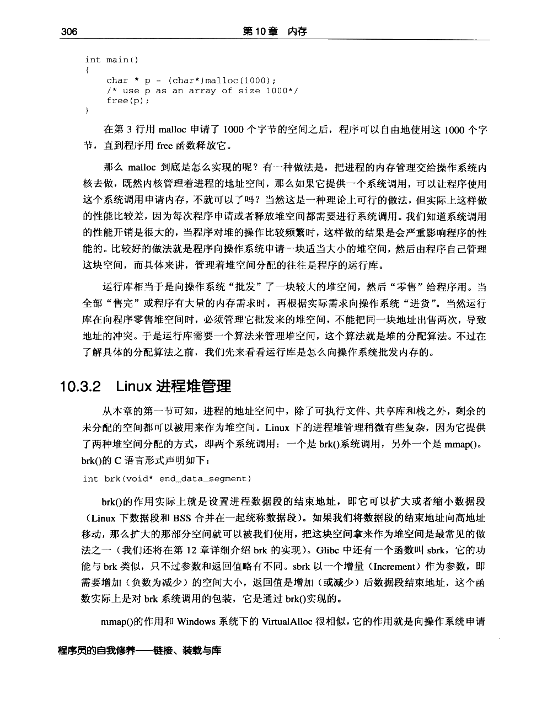
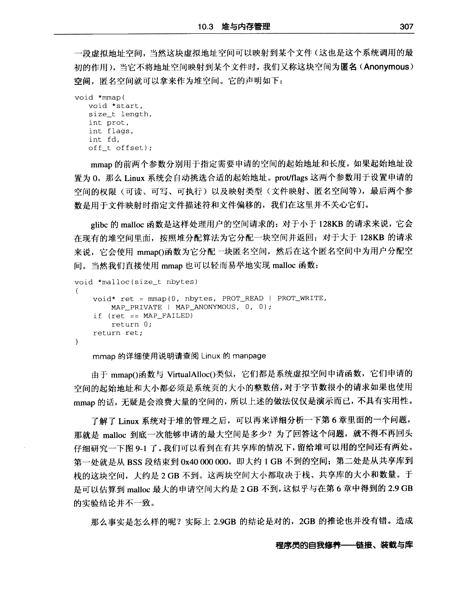
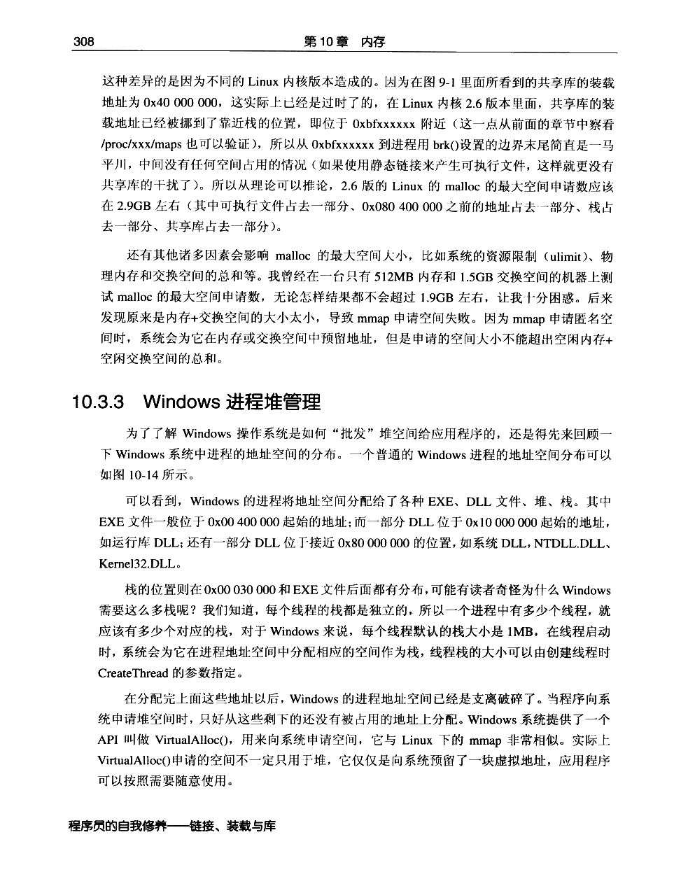
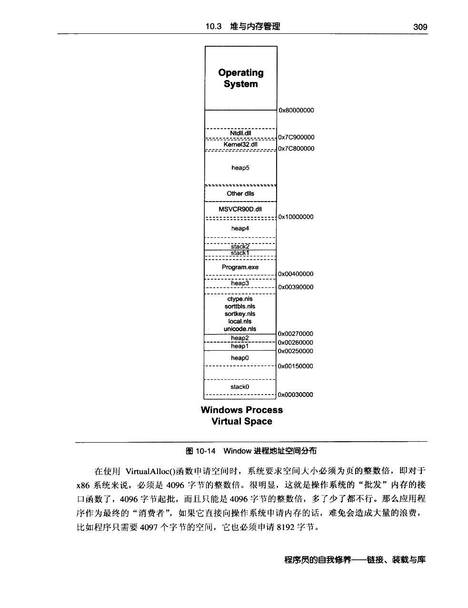
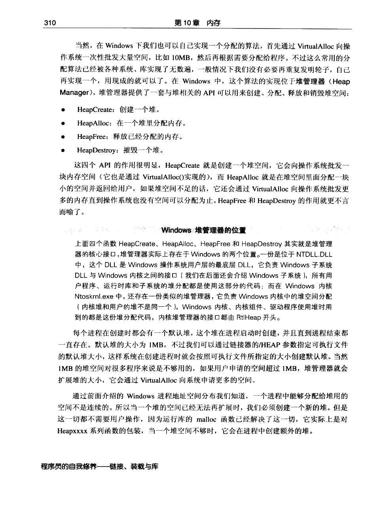
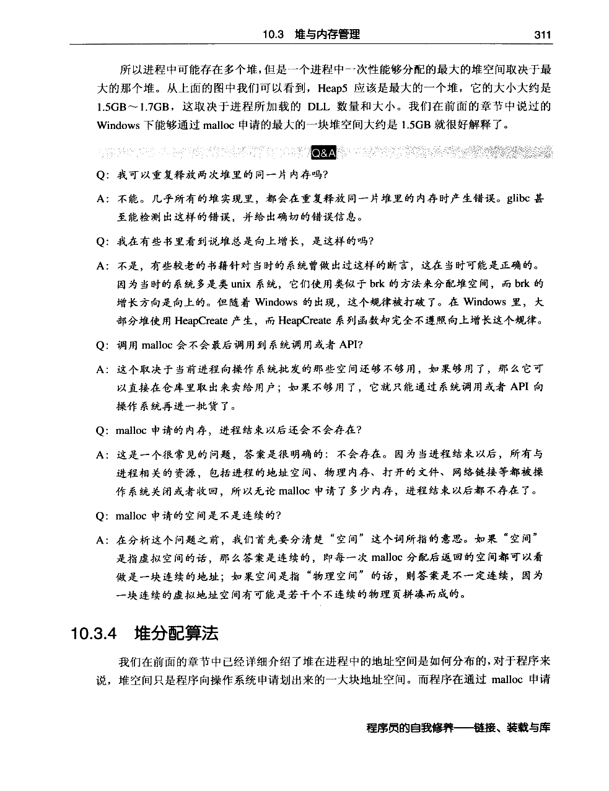
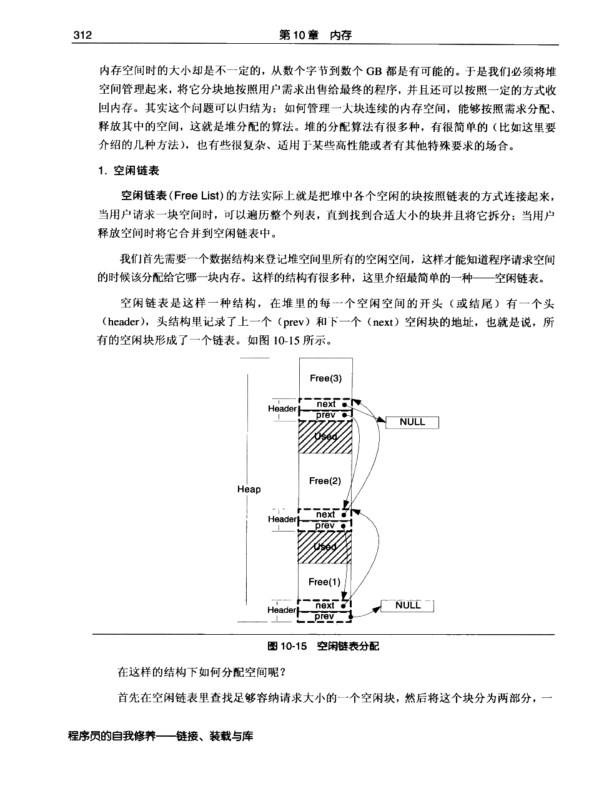
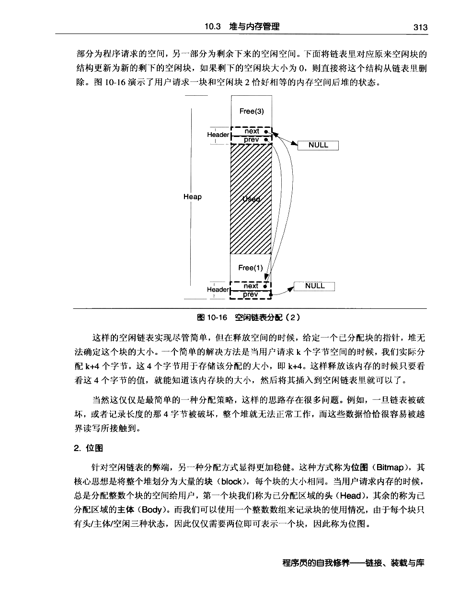
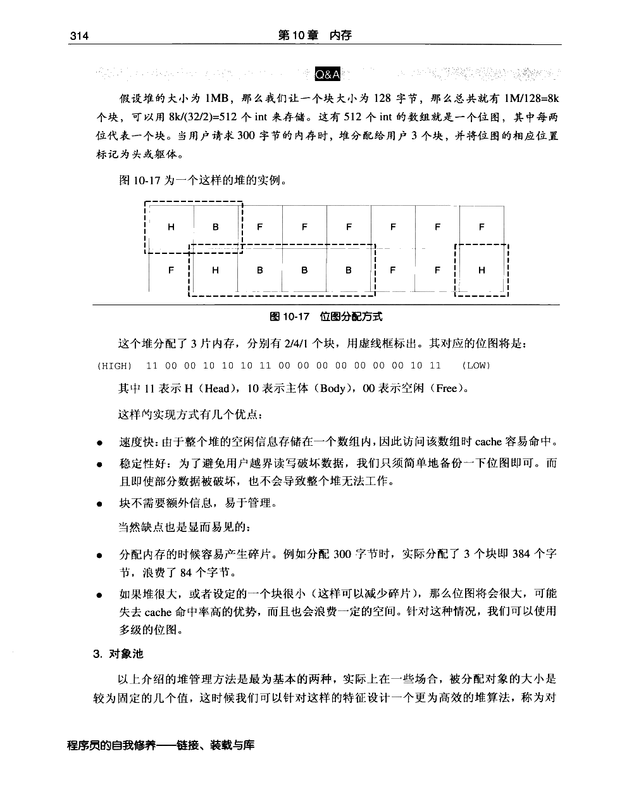
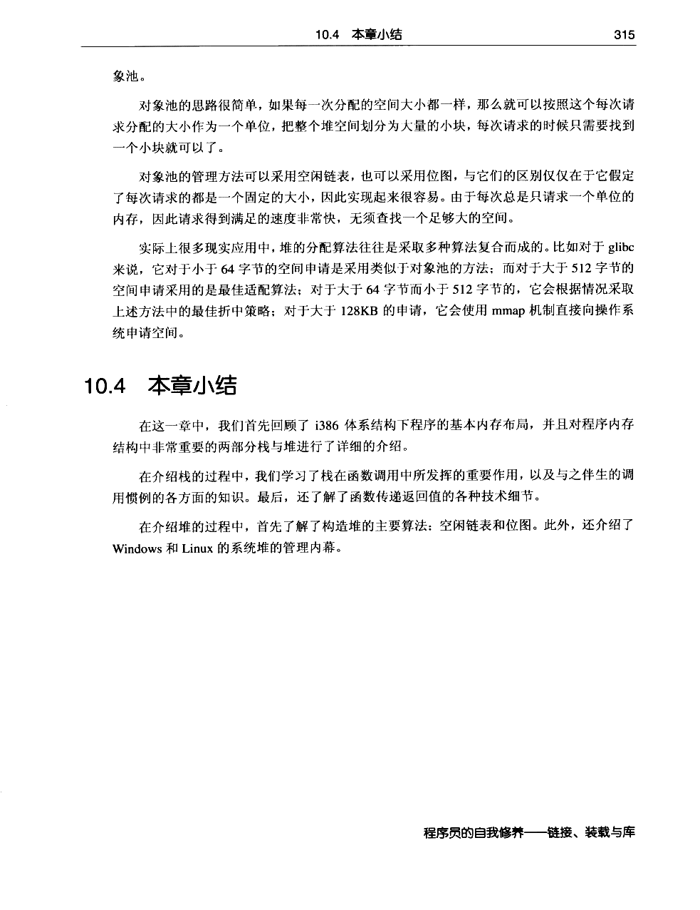

← 返回正文10.3 堆与内存管理
PDF 第 328 页 · 书内第 305 页 PDF 第 329 页 · 书内第 306 页
PDF 第 329 页 · 书内第 306 页
PDF 第 330 页 · 书内第 307 页
PDF 第 331 页 · 书内第 308 页
PDF 第 332 页 · 书内第 309 页
PDF 第 333 页 · 书内第 310 页
PDF 第 334 页 · 书内第 311 页
PDF 第 335 页 · 书内第 312 页
PDF 第 336 页 · 书内第 313 页
PDF 第 337 页 · 书内第 314 页
PDF 第 338 页 · 书内第 315 页